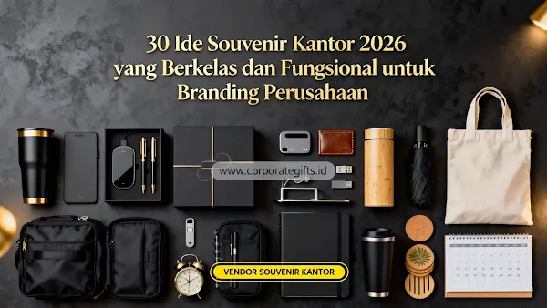

Corporate Gifts ID - Souvenir kantor 2026 yang paling efektif untuk branding perusahaan adalah produk yang dipakai setiap hari, seperti tumbler insulated, wireless charger, dan notebook custom, karena logo perusahaan terlihat berulang kali secara alami tanpa terkesan memaksa.
Tren souvenir kantor tahun ini bergeser secara signifikan dari merchandise generik ke tech gadget fungsional dan produk berbahan ramah lingkungan yang memiliki nilai pakai jangka panjang.
Poin Kunci Souvenir Kantor 2026:
- Dampak Branding Harian: Souvenir yang dipakai berulang seperti tumbler dan gadget meja menjaga eksposur visual logo secara konsisten.
- Pergeseran Tren 2026: Fokus beralih ke teknologi modern (smart gadgets) dan produk keberlanjutan (eco-friendly materials).
- Kesesuaian Profil Acara: Stationery eksklusif untuk onboarding/seminar, gift set VIP untuk relasi eksekutif, dan gadget mid-range untuk event massal.
- Daya Tahan Kualitas Cetak: Grafir laser pada metal dan UV print beresolusi tinggi memastikan logo tahan gores dan tidak pudar.
- Timeline Pengadaan Terencana: Waktu pemesanan ideal adalah 2 hingga 4 minggu sebelum agenda acara diselenggarakan.
Souvenir Kantor 2026 Apa yang Paling Dicari untuk Branding?
Kategori yang paling banyak dicari saat ini terbagi ke dalam lima kelompok utama:
1. Tech Gadget untuk Kerja Modern
Wireless charger fast-charging dan power bank custom slim tetap menjadi favorit karena dipakai setiap hari di meja kerja maupun saat perjalanan dinas. Mouse wireless silent dan headset bluetooth office melengkapi kebutuhan meeting online yang semakin umum, sementara mini bluetooth speaker dan jam meja digital menambah estetika modern di ruang kerja.

Kombinasi thermal cup hitam elegan, buku agenda kulit, wireless charger, dan pouch kerja serbaguna.
2. Stationery dan Alat Tulis Premium
Notebook hard cover, smart notebook yang terhubung ke aplikasi digital, dan pulpen metal grafir laser tetap relevan untuk acara formal seperti seminar korporat atau program onboarding karyawan baru. Desk calendar custom 2026 dan planner tahunan efektif untuk branding jangka panjang karena dipajang setiap hari di meja kerja.
3. Souvenir Ramah Lingkungan (Green Office)
Notebook spiral daur ulang dan tote bag kanvas eksklusif mendukung kampanye green office serta komitmen ESG perusahaan. Payung lipat anti-UV berbahan ramah lingkungan juga menjadi opsi favorit berbiaya efisien dengan area bidang cetak logo yang luas.
4. Apparel dan Fashion Kantor
Kaos polo custom bordir presisi, hoodie kantor modern, dan jaket windbreaker sangat cocok untuk perusahaan dengan budaya kerja dinamis dan tim kreatif. Lanyard cetak sublimasi dan tas selempang kerja melengkapi kebutuhan identitas kantor harian.
5. Souvenir Premium dan Eksklusif
Gift set premium berisi kombinasi tumbler SUS 304, agenda kulit, dan pulpen metal yang dikemas dalam kotak hardbox berpita magnetik sangat ideal untuk relasi VIP dan pimpinan instansi.
30 Pilihan Ide Souvenir Kantor 2026 Terlengkap
Berikut ringkasan 30 ide souvenir kantor 2026 yang dapat disesuaikan dengan kebutuhan acara dan segmen penerima:
| No | Nama Souvenir | Kategori Produk | Peruntukan Acara Terbaik |
|---|---|---|---|
| 1 | Smart Notebook Digital Reusable | Tech Gadget | Onboarding karyawan, seminar eksekutif |
| 2 | Tumbler Insulated Stainless SUS 304 | Fungsional Harian | Branding harian, gathering perusahaan |
| 3 | Wireless Charger Fast Charging Desk Pad | Tech Gadget | Meja kerja modern, hadiah apresiasi |
| 4 | Mouse Wireless Silent Click | Tech Gadget | Work from anywhere, produktivitas kerja |
| 5 | Desk Calendar Custom 2026 | Stationery | Branding akhir tahun, media promosi harian |
| 6 | Tote Bag Kanvas Premium Kantong Depan | Eco-Friendly | Seminar kit, expo pameran industri |
| 7 | Pulpen Metal Rollerball Laser Engraved | Stationery Premium | Penandatanganan MoU, cinderamata formal |
| 8 | Notebook Hard Cover Kulit Sintetis Deboss | Stationery | Rapat kerja tahunan, seminar kit eksekutif |
| 9 | Executive Gift Set Box 3-in-1 | Corporate Gift VIP | Apresiasi klien prioritas, mitra B2B |
| 10 | Jaket Bomber / Windbreaker Custom | Apparel Korporat | Seragam tim internal, outing kantor |
| 11 | Lanyard Tali Tissue Sublimasi Full Color | Perlengkapan Event | ID card harian, panitia konferensi |
| 12 | USB Flash Drive OTG Metal 64GB-128GB | Tech Gadget | Media materi workshop, data presentasi |
| 13 | Mini Bluetooth Speaker Portable | Tech Gadget | Door prize gathering, bingkisan modern |
| 14 | Power Bank Slim Fast Charging 10.000 mAh | Tech Gadget | Mobilitas dinas luar, perjalanan bisnis |
| 15 | Payung Lipat Otomatis Anti-UV | Fungsional Harian | Souvenir musim hujan, merchandise perbankan |
| 16 | Hampers Parcel Box Kopi & Camilan Artisan | Seasonal Gift | Bingkisan hari raya, perayaan akhir tahun |
| 17 | Stempel Otomatis Flash Custom Logo | Stationery | Operasional administrasi, souvenir internal |
| 18 | Mug Keramik Matte Coating Laser Print | Fungsional Harian | Pantry kantor, merchandise onboarding |
| 19 | Executive Planner Agenda 2026 | Stationery | Manajemen target tahunan, rapat divisi |
| 20 | Sticky Note Set & Memo Box Organizer | Stationery | Kerapian meja kantor, perlengkapan training |
| 21 | Lampu Meja LED Minimalis Dimmable | Tech Gadget | Estetika ruang kerja, hadiah loyalitas |
| 22 | Jam Meja Digital Termometer Kayu | Tech Gadget | Cinderamata purnatugas, meja resepsionis |
| 23 | Goodie Bag Blacu Tematik Event | Perlengkapan Event | Seminar massal, simposium kampus |
| 24 | Headset Bluetooth Noise-Cancelling Office | Tech Gadget | Meeting daring, call center profesional |
| 25 | Kaos Polo Katun Pique Bordir Komputer | Apparel Korporat | Seragam kasual Jumat, team building |
| 26 | Hoodie Zipper Fleece Katun Hangat | Apparel Korporat | Perusahaan rintisan, agensi kreatif |
| 27 | Thermal Cup Coffee Tumbler Handle | Fungsional Harian | Pecinta kopi kantor, hadiah relasi dekat |
| 28 | Notebook Daur Ulang Kraft Paper Eco-Set | Eco-Friendly | Program CSR, konferensi lingkungan |
| 29 | Tas Selempang Laptop Anti-Air | Fungsional Harian | Onboarding engineer, mobilitas konsultan |
| 30 | Plakat Akrilik / Kayu Grafir Penghargaan | Recognition & Award | Best employee, apresiasi pengabdian mitra |
Bagaimana Cara Memilih Souvenir Kantor 2026 yang Tepat?
Memilih souvenir kantor yang tepat membutuhkan keselarasan tiga variabel utama:
- Tujuan Acara: Sesuaikan dengan konteks pertemuan. Program formal membutuhkan stationery elegan atau gift set box, sedangkan acara santai lebih pas menggunakan apparel dan tumbler.
- Tingkat Penggunaan Harian: Utamakan barang fungsional yang dipakai rutin. Semakin sering produk digunakan, semakin tinggi impresi organik yang diraih oleh merek perusahaan Anda.
- Ketahanan Teknik Cetak Logo: Gunakan grafir laser pada logam atau UV print pada plastik/kanvas agar visual brand tidak cepat pudar setelah pencucian berkala.
Kesimpulan dan Solusi Pengadaan
Pengadaan souvenir kantor 2026 bukan sekadar pembagian bingkisan seremonial, melainkan investasi strategis jangka panjang untuk menumbuhkan loyalitas mitra dan memperkuat reputasi merek di pasar.
Siap mewujudkan paket souvenir kantor berkelas untuk instansi Anda? Diskusikan ide dan anggaran pengadaan Anda bersama tim Corporate Gifts ID untuk mendapatkan konsultasi gratis, simulasi RAB, dan preview mockup digital instan.